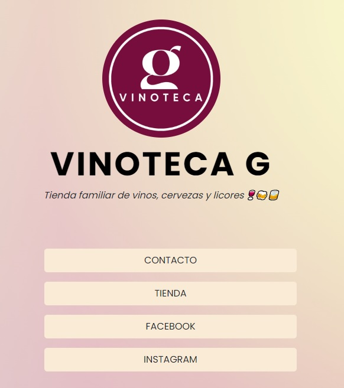
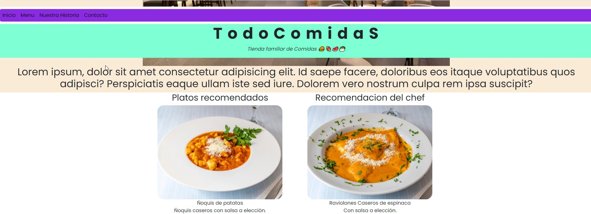

MIS PROYECTOS
VINOTECA G
En este caso tengo el agrado de mostrarles el proyecto realizado en el curso de la plataforma denominada POTRERO DIGITAL en la cual abordamos lo necesario de HTML y CSS para poder construir una web practica y amigable.
TODOCODE
Aqui tengo el placer de mostrarles unos de mis primeros proyectos realizados con las tecnologias de HTML y CSS para la Plataforma de TodoCode Academy